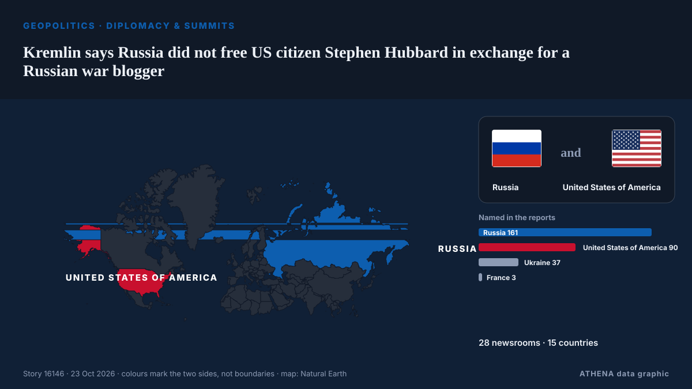

Kremlin says Russia did not free US citizen Stephen Hubbard in exchange for a Russian war blogger

Putin says Russia has freed US citizen Stephen Hubbard. из CGTN (World)
Независимые источники: 28 изданий в 15 странах, с 21 окт.; первым сообщил CGTN (World); освещение идёт на спад. ATHENA оценивает риск как повышенный (5.3/10), прежде всего из-за тяжести описываемого ущерба и географического и отраслевого охвата. Уверенность — 93 % (высокая); подтверждают независимые источники: 28 изданий, средняя надёжность источников — 80 %.
Почему это важно: Полномасштабное вторжение России в Украину началось в феврале 2022 года. Мониторинг следит за боевыми действиями, ударами по инфраструктуре и дипломатией вокруг войны так, как их освещает мировая пресса.
Что изменилось: 6 новых сообщений от 5 редакций за 24 часа до 23 окт..
Заголовки приводятся на английском языке, как они были опубликованы.
Коротко в цифрах
Отобрано, оценено и написано по опубликованной методологии ATHENA. Ни один редактор не вмешивается в отдельные события. Как это создаётся ›
| 21 Oct 09:04 UTC | 6 |
|---|---|
| 21 Oct 11:04 UTC | 4 |
| 21 Oct 13:04 UTC | 9 |
| 21 Oct 15:04 UTC | 2 |
| 21 Oct 17:04 UTC | 1 |
| 21 Oct 19:04 UTC | 5 |
| 21 Oct 21:04 UTC | 4 |
| 21 Oct 23:04 UTC | 2 |
| 22 Oct 01:04 UTC | 2 |
| 22 Oct 03:04 UTC | 0 |
| 22 Oct 05:04 UTC | 1 |
| 22 Oct 07:04 UTC | 3 |
| 22 Oct 09:04 UTC | 1 |
| 22 Oct 11:04 UTC | 1 |
| 22 Oct 13:04 UTC | 0 |
| 22 Oct 15:04 UTC | 1 |
| 22 Oct 17:04 UTC | 2 |
| 22 Oct 19:04 UTC | 0 |
| 22 Oct 21:04 UTC | 0 |
| 22 Oct 23:04 UTC | 0 |
| 23 Oct 01:04 UTC | 0 |
| 23 Oct 03:04 UTC | 0 |
| 23 Oct 05:04 UTC | 0 |
| 23 Oct 07:04 UTC | 0 |
| 23 Oct 09:04 UTC | 1 |
| 22 Oct 07:04 UTC | 4.6 |
|---|---|
| 22 Oct 07:05 UTC | 4.0 |
| 23 Oct 10:13 UTC | 5.3 |
| 23 Oct 10:13 UTC | 5.3 |
Откуда эти цифры
Значимость
Риск
Уверенность
Освещение — кто сообщил и когда
заголовок в оригинале · открывает источник- CGTN (World) · Китай · ChinaPutin says Russia has freed US citizen Stephen Hubbard
- NBC News (World) · Соединенные Штаты · United StatesRetired American teacher imprisoned by Russia returns to U.S.
- Meduza (English) · Россия · RussiaPutin releases U.S. citizen Stephen Hubbard, who fought on Ukraine’s side
- Fox News (World) · Соединенные Штаты · United StatesRussia releases American teacher imprisoned on Ukraine mercenary charges after Trump pressed Putin
- RFE/RL (English) · INTUS Citizen Accused By Moscow Of Fighting For Ukraine Released From Russian Prison
- NPR World · Соединенные Штаты · United StatesRussia releases imprisoned U.S. citizen Stephen Hubbard following Trump's request
- The National · ОАЭ · United Arab EmiratesRussia frees US citizen Stephen Hubbard
- Euronews English · Франция · FranceKremlin open to new Ukraine peace talks as Russia frees US teacher Stephen Hubbard
- Kyiv Post · Украина · UkrainePutin Orders US Teacher’s Release as Witkoff Arrives for Talks
- TASS (English) · Россия · RussiaFACTBOX: Release of American citizen Stephen Hubbard convicted in Russia
- NBC News (World) · Соединенные Штаты · United StatesWho is Stephen Hubbard, the retired American teacher freed by Russia?
- The New York Times (World) · Соединенные Штаты · United StatesWho Is Stephen James Hubbard, the American Released From Russian Jail?
- CBS News (World) · Соединенные Штаты · United StatesStephen Hubbard released by Russia after years in prison
- PBS NewsHour World · Соединенные Штаты · United StatesRussia frees American Stephen Hubbard after over 4 years in prison, during a visit from U.S. envoy Witkoff
- RTÉ News · Ирландия · IrelandRussia frees retired US schoolteacher Stephen Hubbard
- Global News (World) · Канада · CanadaRussia frees American prisoner after over 4 years during a U.S. envoy visit
- DW English · Германия · GermanyRussia frees jailed American Stephen Hubbard during Witkoff talks
- TASS (English) · Россия · RussiaUS citizen Hubbard freed in Russia is heading home — envoy
- Africanews (English) · AFRRussia frees jailed American as Putin meets US envoy for Ukraine talks
- Meduza (English) · Россия · RussiaWho is Stephen Hubbard, the American Putin just freed?
- The Guardian · Великобритания · United KingdomThousands march in Greece over public education failures as Macron blasts ‘stupid’ commentary on French protests – as it happened
- France 24 English · Франция · FranceTrump faces fresh questions over ties to 'humanitarian' Putin
- RFE/RL (English) · INTAmerican Stephen Hubbard Freed After More Than 4 Years In Russian Custody
- The Straits Times · Сингапур · SingaporeRussia frees retired US schoolteacher in goodwill gesture as Putin meets Witkoff
- TASS (English) · Россия · RussiaTrump calls those urging more Russia sanctions ‘stupid people’
- CBS News (World) · Соединенные Штаты · United States10/21: The Takeout with Major Garrett
- CBS News (World) · Соединенные Штаты · United StatesAmerican Stephen Hubbard released by Russia, Trump confirms
- Arab News · Саудовская Аравия · Saudi ArabiaRussia frees American Stephen Hubbard after over 4 years behind bars
- NPR World · Соединенные Штаты · United StatesPutin releases American Stephen Hubbard from Russian prison
- PBS NewsHour World · Соединенные Штаты · United StatesAmerican imprisoned by Russia released as Witkoff meets and praises Putin
- The National · ОАЭ · United Arab EmiratesWar and peace: Trump team now says Putin is a 'humanitarian'
- CBS News (World) · Соединенные Штаты · United StatesStephen Hubbard's son after his release from Russian prison: "I want to embrace him"
- CBS News (World) · Соединенные Штаты · United StatesSon of Stephen Hubbard, American freed from Russian jail, speaks out
- The Guardian · Великобритания · United KingdomPutin orders release of jailed American as he meets Trump envoy for Ukraine talks
- Al Jazeera English · Катар · QatarRussia frees American Stephen Hubbard after 4 years behind bars
- The Korea Times · Республика Корея · South KoreaRussia frees retired US schoolteacher in goodwill gesture as Putin meets Witkoff
- Interfax-Ukraine (English) · Украина · UkraineRussia releases 74-year-old American from captivity: where he was held and who tortured him
- TASS (English) · Россия · RussiaTrump says Putin’s decision to release Hubbard is greatly appreciated
- Daily Maverick · Южно-Африканская Республика · South AfricaRussia frees retired US schoolteacher in goodwill gesture as Putin meets Witkoff
- The Moscow Times · Россия · RussiaWho Is Stephen Hubbard, the U.S. Citizen Released by Russia?